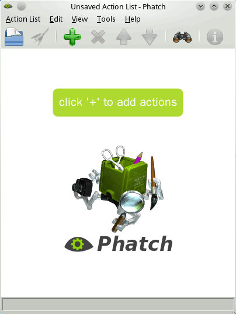
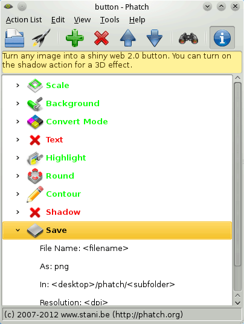
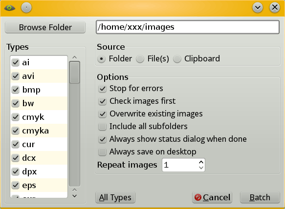
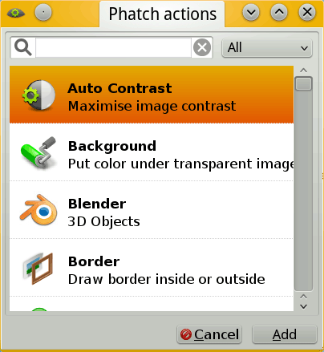

也紀念我們永遠的朋友 李士傑先生（Shih-Chieh Ilya Li）。
Phatch － 跨平台的批次圖片處理軟體
 軟體名稱：Phatch
軟體名稱：Phatch簡介
Phatch 源自「PHoto bATCH Processer」一詞，官網的宣傳口號為「一鍵優化千張照片」－雖然實際操作鍵數要比一鍵略多幾鍵，但也夠方便了。
Phatch 有著小巧的介面，讓使用者以「縮放」、「亮度調整」等「動作 (action)」為本，建立起一串動作列表。一旦動作列表被規劃好，Phatch 能讓使用者對任意數量的圖片，執行這串動作列表。而已被規劃好的列表也能被 Phatch 儲存下來，供使用者日後重複呼叫使用。
Phatch 可以在 Mac、Linux 與 Windows 平台下使用，是跨平台的自由開源軟體。
安裝與執行
想要讓 Phatch 在電腦上跑起來，官網的下載頁 (https://photobatch.stani.be/download/index.html) 有您所需的檔案。不過在下載前，建議您先看看安裝說明 (https://photobatch.wikidot.com/install)。
官網安裝說明寫了一堆，這邊稍微歸納一下。
Linux 平台
對於 Linux 使用者來說，若使用的是 archlinux、fedora 或 openSUSE 其中一個發行版，前往發行版的套件倉庫中就能找到 Phatch，直接使用它們即可（archlinux 是在 AUR 中）；如果是 debian 或 ubuntu 使用者，Phatch 官網有提供 deb 安裝包讓您下載。
身為 Linux 用戶但不屬於這些發行版者，也可直接下載源碼，並在源碼目錄中執行：
python phatch.py
就能讓 Phatch 妥善運作了－當然前題是滿足套件相依性。
官方指定的必備套件有：
1. python 2.4 或 2.5
2. python-wxgtk 2.6 或 2.8
3. python-imaging 1.1.5 或 1.1.6
4. findutils
選配套件有：
1. python-pyexiv2
2. python-nautilus
以上可以參考看看。
Windows 平台
首先，您必須確定您的平台上有一切所需的依賴組件。如果您沒有或對此不確定，您可以下載官方頁面 (https://photobatch.wikidot.com/install#toc9) 上提供的 phatch-dependencies-win32-py25.zip 相關套件包。套件包的安裝方法請參考壓縮檔中的 README.txt，這邊不贅述。
當您準備好依賴後，就可以下載官網提供的程式源碼包，解開源碼包後雙擊執行 phatch.py 檔案，就可以讓程式跑起來了！
介面與操作
初打開時，Phatch 的介面如下：
▲ 圖1：Phatch 啟動時的截圖
如上圖所示，Phatch 的外觀非常儉約，除中間的大片空白外，只提供了一條選單列與一排按鈕。
按鈕的功能從左至右依次為：
- 開啟：之前儲存的動作列表。
- 執行：當前的動作列表。
- 加入：新動作。
- 移除：當前選擇的動作。
- 上移：當前選擇的動作。
- 下移：當前選擇的動作。
- 跳出元數據檢查視窗。
- 顯示當前動作列表的描述訊息。您也可由此修改訊息內容，範例見圖2。
這些按鈕只提供了 Phatch 的部份功能。使用 Phatch 不能全靠按鈕，有些重要操作還是得透過選單才能進行。比方說保存動作列表等。
Phatch 的初始畫面非常貼心地提醒使用者去按【＋】號的大按鈕，讓使用者去新增行動。不過作為初學者，現在先不忙按那個鈕。建議大家先打開 Phatch 預設提供的動作列表，看看一份動作列表具體是什麼樣子。
按【Action List】→【Open Library...】，然後選擇【Button】，螢幕就會變成如下這般。
▲ 圖2：讓 Phatch 讀取 Library: button 後
原本中間的空白部份，被一連串的「動作」給填滿了。
綠色的動作會被執行，紅色則不會。要讓某動作在執行與否之間切換，請去按【Edit】→【Enable】與【Edit】→【Disable】來切換，此外也可用右鍵選單來切換它們。
每個動作底下都有很多額外參數可以填，比方說縮放大小、圓角程度之類的。有些欄位還可填入用角括弧框起的變數，像是 <folder> 之類的……至於具體有哪些變數可用，還請參照官網這一頁：https://photobatch.wikidot.com/variables/，說明得很詳細了。
執行動作列表
現在動作列表已經準備妥當，那麼我們該要如何套用到圖片上呢？
-
準備好想要處理的圖片
- Phatch 提供了很多匯入圖片的方法，不過其中最簡單的做法，還是將整個資料夾匯入。（以下假設各位將要處理的圖片，全部集中到同個資料夾中。）
-
調整動作列表最下面的動作「Save」的參數值：
▲ 圖3：修改 Save 的值
Save Action 的參數里面，需特別注意的是「In」這個欄位。本欄會決定轉換出來的檔案將被存到哪裡。
原本的預設路徑怪怪的，建議改成：
＜folder＞/changed
這樣。（筆者補註：因為某些顯示問題，本文使用的角括號大多是全形角括號，實際使用時請一律換成半形角括號。剪貼無用！）
如此一來，假設原圖片被放在「/home/xxx/images」下，轉換後的圖片就會直接被塞入「/home/xxx/images/changed」中，管理起來比較方便。
- 點擊【Execute the action（火箭）】來執行動作列表。
一旦您決定執行，「匯入選擇視窗」就會跳出來，讓您選擇要匯入處理的圖片是哪些。當然，您該選擇您放圖片的資料夾，圖示如下：
▲ 圖4：匯入選擇視窗
- 按【Batch】，最終檢查視窗就會跳出來。
- 按【Continue】按鈕，新圖檔就會產生到指定的位置上。
▲ 圖5：最終檢查視窗
如何，蠻直覺的吧？
添加與刪除列表中的動作
只要搞懂前述基本流程，Phatch 在操作上就已毫無秘密可言。剩下的只是刪添各種動作，替動作修改參數，只是這樣。
添加「動作」的方法很簡單，正如同 Phatch 最初提示的那樣，只要透過按鈕列上的【＋】符號就能叫出。而刪除就更單純了，只要選擇某個動作，按【×】就行了。
▲ 圖6：添加「動作」時，供使用者選擇的視窗。可選的動作類型大概有五十種以上。
選好動作並將其插入後，就可替動作設定具體數值，就如同先前示範時替「Save 動作」所做的那樣。大部份的變數含意一望可知，但如果無論如何都搞不懂，建議參考這一頁：https://photobatch.wikidot.com/actions/，會有些針對性的說明供參考。
儲存與讀取動作列表
辛苦建立好的動作列表，想保留下來供日後重複使用。這該怎麼做？
【Action List】→【Save】這樣就行了。
至於讀取動作列表，按介面最左邊的資料夾按鈕就能搞定。
大麻煩、小麻煩
Phatch 目前的還不夠精緻，使用時有些小問題需要留意。
翻譯
Phatch 有簡中翻譯版本，可惜翻譯質量欠佳，有些部份連程式變數都給翻譯了，偶爾會讓程式運作時出現意料外的錯誤。
建議不要使用簡中翻譯，然而 Phatch 的語系在圖形介面下沒法修改，此外就算用繁中系統也可能自動載入簡中語系，只能在執行程式時透過終端機輸入語系參數，就像下面這樣：
phatch -l en
因翻譯問題頭疼時，您可參考看看要不要用這招。
中文路徑
筆者使用時發現，有些時候，Phatch 的 Save Action 無法將檔案正確寫入中文路徑底下，只能寫到純英文路徑裡。
建議不要將圖檔放在中文路徑下處理，否則可能突然出問題。
後記
Phatch 是款介面簡單，功能強大的圖片後製軟體。
Phatch 使用方式直覺，能將大量參數整齊合理地包裹在介面裡，以預先規劃好的設定，一次性地處理大量圖片。讓使用者在擁有指令行等級自由度同時，又擁有 GUI 的方便性與易用性。
不過，沒有圖片預覽這點，或許是它身為圖片後製軟體的一項小小缺憾吧？
參考資料
- Phatch 官方網站：https://photobatch.stani.be/
- Phatch 官方手冊：https://photobatch.wikidot.com/
Special


Address：No.128, Sec.2, Academia Rd., Institute of Information Science, Academia Sinica, Nangang District, Taipei City 11529, Taiwan (R.O.C).
Privacy Policy. Terms-of-use